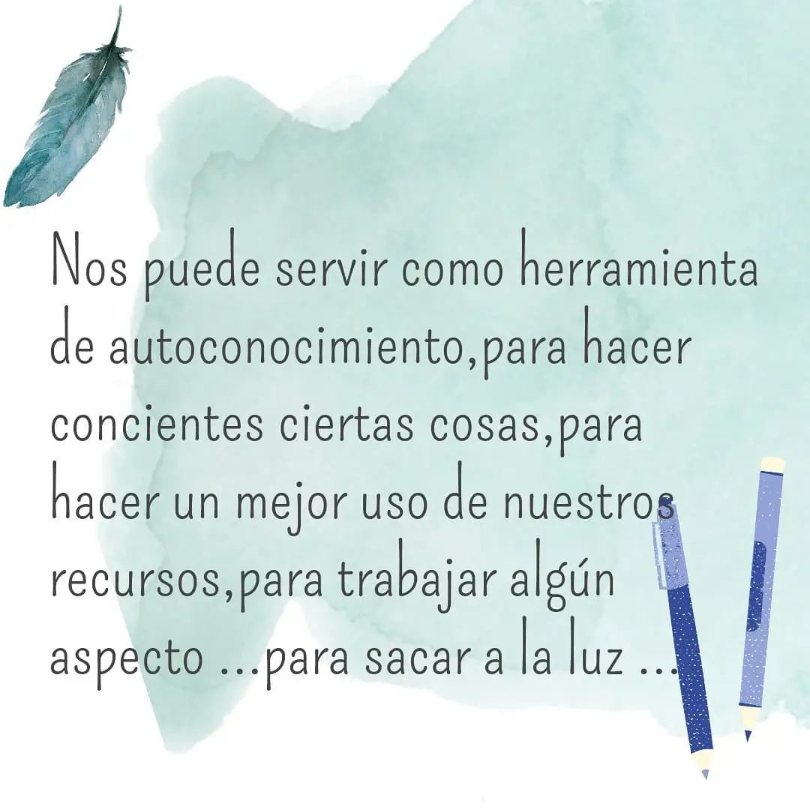
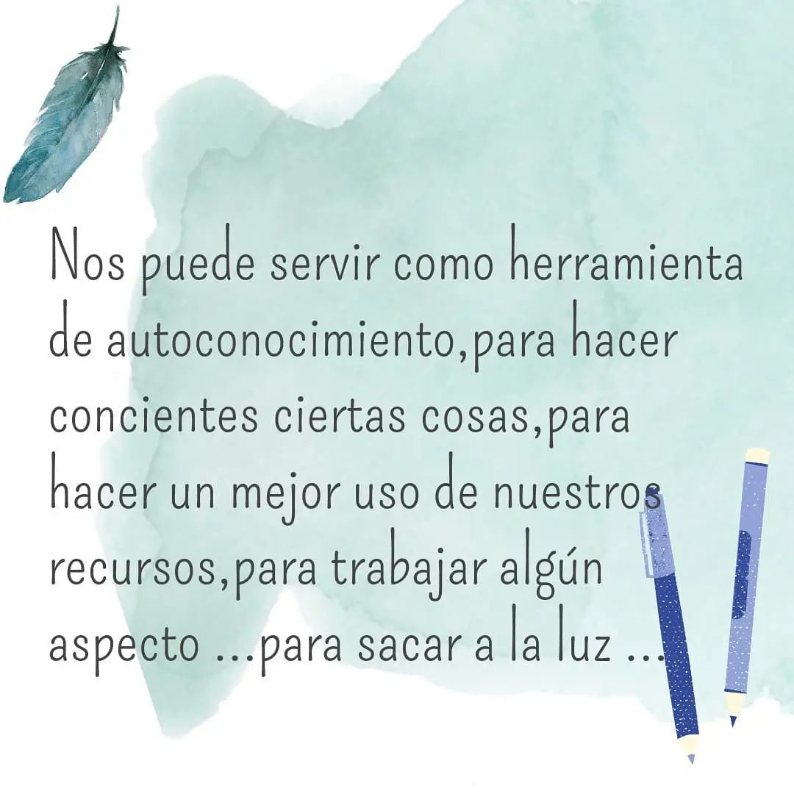

En uno de mis viajes me encontraba atravesando el miedo a viajar en auto sola haciendo dedo. Era un miendo que quería atravesar, me afirmaba que el universo siempre quiere lo mejor para uno. Hasta que llegó el momento y del auto en cuestión se bajaron dos ángeles: Dani y Nico. Bien diferentes entre sí pero con la misma bondad y gracia cordobesa que los caracteriza. Ellos no solo me ayudaron a llegar a mi destino, sino que también fueron el último empujon que necesitaba para materializar este emprendimiento.
Se cerraba un viaje pero comenzaba otro, me preguntaron qué era la Grafología y, al interesarles mi respuesta, les terminé analizando la firma a cada uno. Por esto quiero compartirles que en cada trazo, en cada intercambio se llevan más que un análisis, se llevan conexión. Se llevan un viaje.


 
